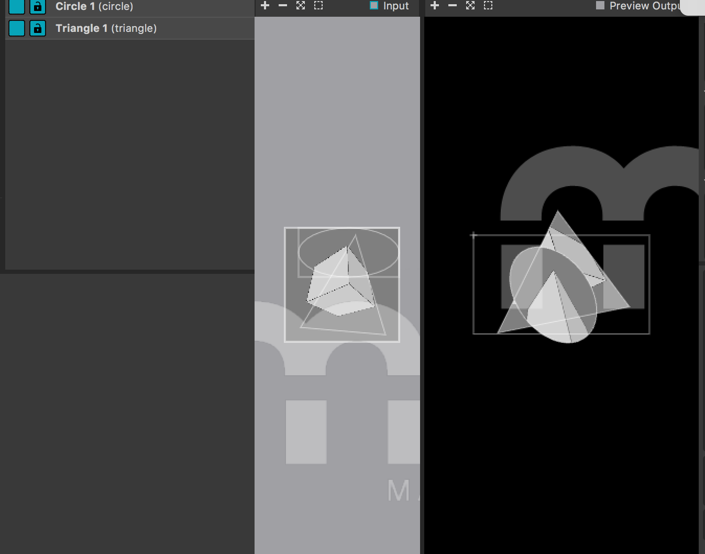

Workshop: Unity/Projection mapping
Unity
Voor HCI moesten wij met het programma Unity een omgeving maken. Hierbij moesten wij verscillende stappen ondernemen. We begonnen met een terein te maken en vervolgens hebben wij daar verschillende objecten opgemaakt. Wij moesten ook een blok op dit terein zetten en als je hier dichtbij kwam dreef dit van je weg. We moesten verschillende triggers gebruiken zoals het in brand zetten van een auto. Met een Script hebben we er uiteindelijk voorgezord dat de auto in in brand kwam te staan als je dichtbij was. Hieronder zijn een paar afbeeldingen te zien van het werk.

Graag wilde ik laten zien hoe mijn omgeving en de triggers in "real life" werkte en daarom heb ik een video gemaakt.
MadMapper
Tijdens de workshop hebben wij ook gewerkt met het programma MadMapper. We hebben met behulp van Processing en dus MadMapper, verschillende vormen gemaakt. De kubus beweegt in de vormen die we hebben gemaakt. Mijn idee was om een surrealistisch effect te creëren. Je moest een code vanuit Processing ssynchroniseren met madmapper.
Reflectie
De begin stapjes van Unity gingen wel, maar het werd steeds moeilijker en ik viel elke keer van mijn platform af. Ik werd er gek van! Niemand begreep ook hoe het kon, maar het is me uiteindelijk gelukt. Toen ik ermee bezig was en ik het niet snapte, vond ik het echt niet leuk. Toen mijn landschap echter af was en ik het meer begreep wel en heb ik zelfs thuis nog met dit programma gespeeld. Madmapper was heel erg tof Chris liet tijdens de workshop het ook zien op een wit oppervlak doormiddel van de beamer.